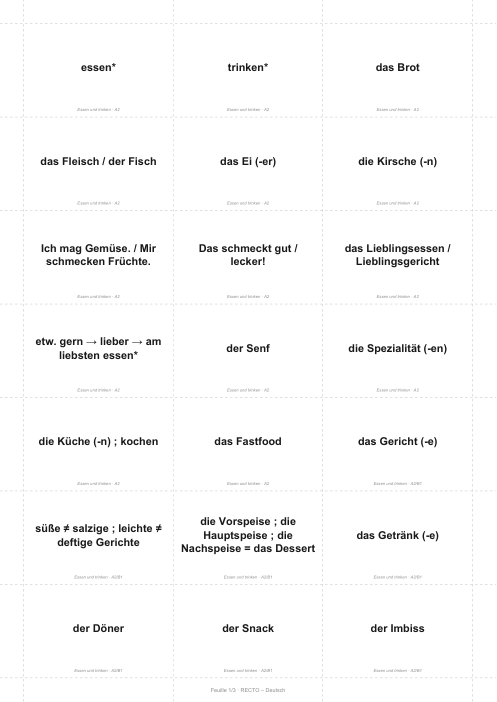
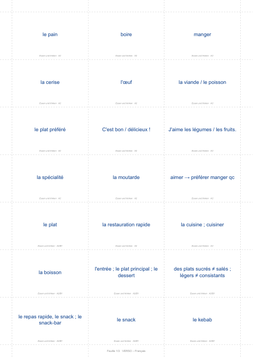
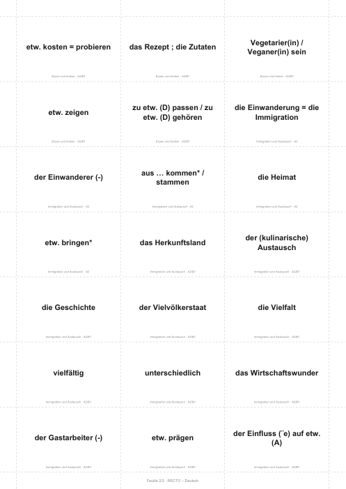
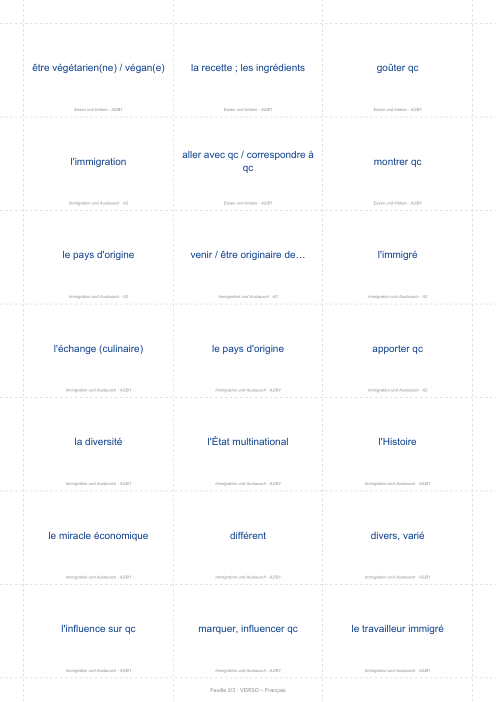
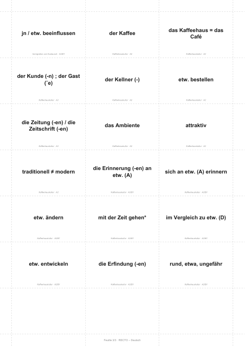
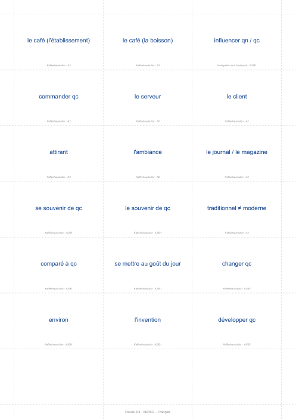

Allemand · Kapitel 1 · Kulinarische Vielfalt · p. 22
Wortschatz Kapitel 1
Les 60 mots du chapitre en flashcards à imprimer et découper. Allemand au recto, français au verso.
Ouvrir le PDF
3 feuilles A4 recto-verso · 21 cartes par feuille
Version audio
Chaque mot en français, deux secondes pour deviner, puis l'allemand deux fois. Coche « en boucle » et laisse tourner dans les écouteurs.
Les 37 mots qui restent à apprendre (5 min)
Les 60 mots du chapitre (9 min)
Comment l'imprimer
- Ouvre le PDF et lance l'impression.
- Choisis recto-verso, en retournant sur le bord long (c'est le réglage par défaut de presque toutes les imprimantes).
- Mets l'échelle à 100 % ou « taille réelle », pas « ajuster à la page », sinon le recto et le verso ne se superposent plus.
- Découpe en suivant les pointillés. Chaque trait traverse toute la feuille, donc un coup de ciseaux par ligne suffit.
Du papier un peu épais (160 à 200 g) donne des cartes plus solides, mais du papier normal marche aussi. Si ton imprimante ne fait pas le recto-verso, imprime la page 1, remets la feuille et imprime la page 2 au dos.
Aperçu des feuilles






Voir la liste des 60 mots
| Essen und trinken · A2 | |
|---|---|
| essen* | manger |
| trinken* | boire |
| das Brot | le pain |
| das Fleisch / der Fisch | la viande / le poisson |
| das Ei (-er) | l'œuf |
| die Kirsche (-n) | la cerise |
| Ich mag Gemüse. / Mir schmecken Früchte. | J'aime les légumes / les fruits. |
| Das schmeckt gut / lecker! | C'est bon / délicieux ! |
| das Lieblingsessen / Lieblingsgericht | le plat préféré |
| etw. gern → lieber → am liebsten essen* | aimer → préférer manger qc |
| der Senf | la moutarde |
| die Spezialität (-en) | la spécialité |
| die Küche (-n) ; kochen | la cuisine ; cuisiner |
| das Fastfood | la restauration rapide |
| Essen und trinken · A2/B1 | |
| das Gericht (-e) | le plat |
| süße ≠ salzige ; leichte ≠ deftige Gerichte | des plats sucrés ≠ salés ; légers ≠ consistants |
| die Vorspeise ; die Hauptspeise ; die Nachspeise = das Dessert | l'entrée ; le plat principal ; le dessert |
| das Getränk (-e) | la boisson |
| der Döner | le kebab |
| der Snack | le snack |
| der Imbiss | le repas rapide, le snack ; le snack-bar |
| etw. kosten = probieren | goûter qc |
| das Rezept ; die Zutaten | la recette ; les ingrédients |
| Vegetarier(in) / Veganer(in) sein | être végétarien(ne) / végan(e) |
| etw. zeigen | montrer qc |
| zu etw. (D) passen / zu etw. (D) gehören | aller avec qc / correspondre à qc |
| Immigration und Austausch · A2 | |
| die Einwanderung = die Immigration | l'immigration |
| der Einwanderer (-) | l'immigré |
| aus … kommen* / stammen | venir / être originaire de… |
| die Heimat | le pays d'origine |
| etw. bringen* | apporter qc |
| Immigration und Austausch · A2/B1 | |
| das Herkunftsland | le pays d'origine |
| der (kulinarische) Austausch | l'échange (culinaire) |
| die Geschichte | l'Histoire |
| der Vielvölkerstaat | l'État multinational |
| die Vielfalt | la diversité |
| vielfältig | divers, varié |
| unterschiedlich | différent |
| das Wirtschaftswunder | le miracle économique |
| der Gastarbeiter (-) | le travailleur immigré |
| etw. prägen | marquer, influencer qc |
| der Einfluss (¨e) auf etw. (A) | l'influence sur qc |
| jn / etw. beeinflussen | influencer qn / qc |
| Kaffeehauskultur · A2 | |
| der Kaffee | le café (la boisson) |
| das Kaffeehaus = das Café | le café (l'établissement) |
| der Kunde (-n) ; der Gast (¨e) | le client |
| der Kellner (-) | le serveur |
| etw. bestellen | commander qc |
| die Zeitung (-en) / die Zeitschrift (-en) | le journal / le magazine |
| das Ambiente | l'ambiance |
| attraktiv | attirant |
| traditionell ≠ modern | traditionnel ≠ moderne |
| Kaffeehauskultur · A2/B1 | |
| die Erinnerung (-en) an etw. (A) | le souvenir de qc |
| sich an etw. (A) erinnern | se souvenir de qc |
| etw. ändern | changer qc |
| mit der Zeit gehen* | se mettre au goût du jour |
| im Vergleich zu etw. (D) | comparé à qc |
| etw. entwickeln | développer qc |
| die Erfindung (-en) | l'invention |
| rund, etwa, ungefähr | environ |